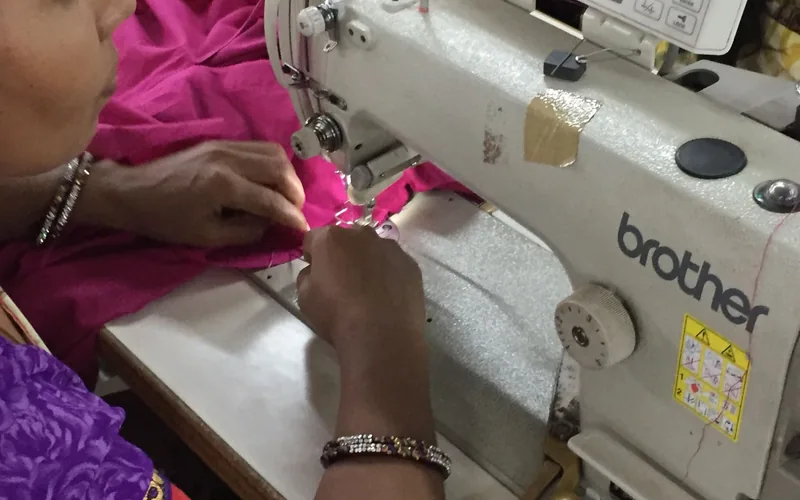
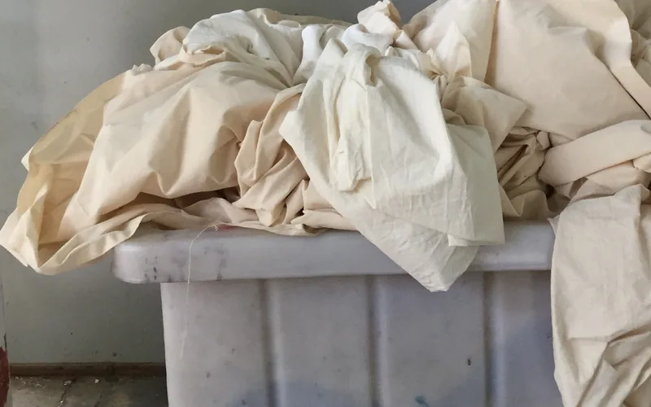
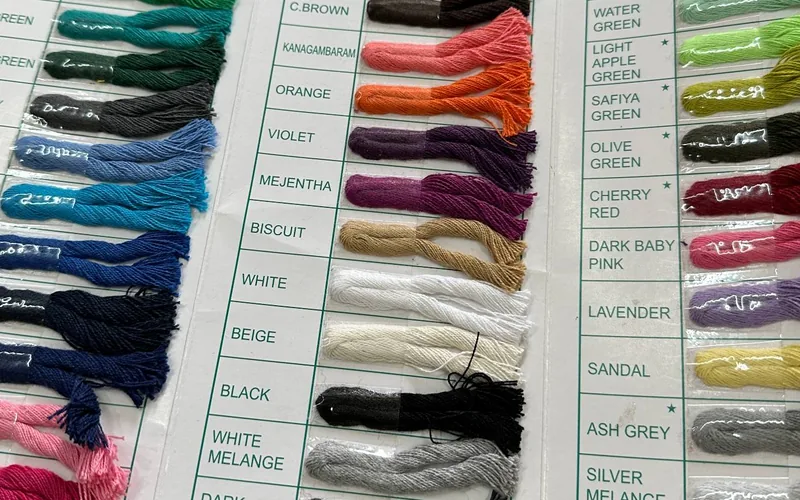
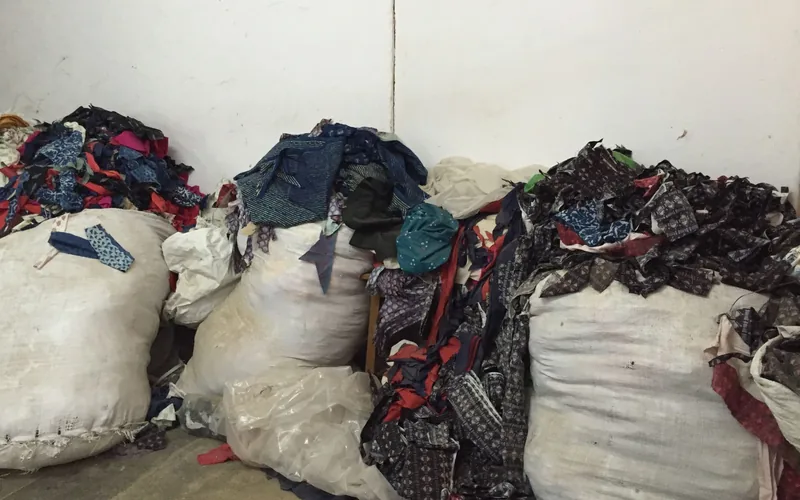

Extended Producer Responsibility (EPR) Readiness
Supporting brands and producers in understanding and preparing for EPR obligations as they enter force across the EU and key national markets.
Global Industry Alliance · Est. 2025
Circular Textile Alliance (CTA) is an independent nonprofit organization working to strengthen the textile economy through education, research, collaboration, and practical implementation.
Textiles touch every person, every community, and every economy. Yet the textile system is complex. Every product reflects decisions about materials, manufacturing, labor, transportation, retail, consumer use, recovery, and end-of-life management. Consumers typically experience only a small part of that system, while the people and organizations within the industry experience its complexity every day.
CTA exists to help bridge the gap between people and the textile industry.
We bring together consumers, manufacturers, brands, retailers, researchers, educators, policymakers, nonprofit organizations, innovators, and other stakeholders to improve understanding, strengthen collaboration, and advance practical solutions.
To bridge the gap between people and the textile industry by advancing solutions through education, collaboration, research, and practical implementation that strengthen a transparent, resilient, and circular textile economy.
A future where every textile is valued as a resource, every participant understands their role in the system, and innovation, transparency, and responsible production create lasting economic, environmental, and social value.
Who We Are
Founded in 2025, the Circular Textile Alliance is an independent, non-profit industry body dedicated to transforming how the world produces, uses, and recirculates textile materials.
Our role is to create connection, understanding, and practical pathways for progress across the textile economy. CTA serves as:
Our Approach
01
We bring together the full spectrum of stakeholders to build shared understanding and align on common goals.
02
Our research informs regulatory frameworks in the EU, UK, and key markets, grounding policy in operational reality.
03
We develop and steward open standards for fibre content labelling, sorting, and material passports.
04
From collection trials to recycling infrastructure, we design and de-risk the pilots that prove new circular systems work.
Programmes

Supporting brands and producers in understanding and preparing for EPR obligations as they enter force across the EU and key national markets.

Mapping viable chemical and mechanical recycling routes for blended fibre streams and facilitating offtake agreements between brands and recyclers.

A consortium of 18 brands testing interoperable material passport schemas compliant with EU Product Regulation requirements due 2027.

Building formal, dignified post-consumer collection systems in markets that currently absorb disproportionate volumes of exported used clothing.
Membership
Membership spans brands, manufacturers, recyclers, sorters, technology providers, NGOs, and intergovernmental bodies. Shared governance ensures no single sector dominates the agenda.
H&M Group Inditex PVH Corp Lenzing AG Renewlondon Fashion for Good Global Fashion Agenda
Patagonia Eileen Fisher Arc'teryx Mud Jeans HKRITA Worn Again Technologies Ecoalf Recover™ Re:newcell Fibre Trace Stormharbour Salsa Jeans
European Environment Agency WRAP Textile Exchange Ellen MacArthur Foundation OECD Environment Directorate GIZ World Resources Institute UNEP BSR
+ 100 additional member organizations
Knowledge & Research
Annual Report 2024
Our flagship annual assessment of progress against the sector's 2030 circularity targets, covering collection rates, recycling capacity, and policy uptake across 38 markets.
84 pages Download
Policy Brief 2024
Guidance for legislators on structuring effective Extended Producer Responsibility schemes that incentivise durability, repairability, and recyclability.
32 pages Download
Technical Report 2023
A quantitative assessment of the gap between existing post-consumer textile sorting capacity in Europe and the volumes anticipated under incoming EPR legislation.
56 pages Download
Discussion Paper 2023
A proposal for a common data schema enabling interoperable digital product passports across brands, platforms, and national registry systems.
28 pages Download
Latest News

The Alliance submitted a joint industry response to the European Commission's consultation on the revised Textile Strategy, calling for harmonised EPR frameworks and minimum recycled content standards.

A three-year programme will establish pilot collection and sorting infrastructure in Indonesia, Vietnam, and the Philippines, addressing the growing informal sector transition.

Over 800 delegates convened in Amsterdam for the third annual Circular Textiles Summit, resulting in 14 new cross-sector commitments and a roadmap on blended fibre recyclability.